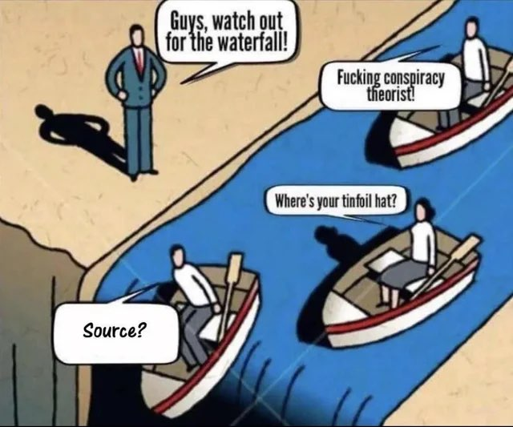

Climate Change And Global Warming
An Analysis And Solutions
1. Understanding Climate Change
See: Wikipedia: Climate Change.
I support the scientific consensus that climate change and global warming are ongoing, human-caused, and likely to have strong negative consequences for humans, the Earth, and the world’s ecosystems. The evidence is clear that the greenhouse gas (GHG) levels in the Earth’s atmosphere, the Earth’s sea levels, and the Earth’s temperatures are the highest they have ever been in modern human history. The best explanation for why such significant changes to the Earth’s ecology have occurred in such a geologically short time period is that they are a consequence of humans burning fossil fuels for energy during the Industrial Revolution and modern era.
However, I also believe that climate change has become moralized and politicized on both sides. This has caused a lot of propaganda and inaccurate information to arise. There are many ecological phenomena that have been wrongly attributed to climate change, since their causes have been misidentified. In this essay, I will talk about climate change, how it compares to other ecological issues, current activism, and what humanity should do to stop climate change and address related ecological issues.
1.1. Why is Climate Change a Problem?
The Earth is estimated to have had much higher temperatures, CO2 levels, and other differing ecological conditions millions of years ago.
The climate has always been fluctuating significantly throughout the Earth’s recorded history.
That is true. However, we also have to keep in mind that modern humans evolved during the Last Glacial Period when the planet was much cooler. From a bio-evolutionary perspective, it makes sense that humans would want to keep the Earth at cooler temperatures than the projected temperatures that we are predicting decades from now. As global temperatures continue to rise and the climate continues to change, humans will become increasingly more maladapted to the Earth’s environmental conditions.
Even if the global average temperature only goes up by an estimated ~4.5°C at max, that is the average temperature increase, between the future years and the present. That means that it’s still possible to have some days or weeks in a year where the temperature is much hotter than that, especially during the summer months. Imagine what it could be like to live in a city where the average temperature well over 50°C or 130°F for days or weeks. That’s half the necessary heat for boiling water. That would be hot enough to kill people who don’t have any sufficient means of protecting themselves from the heat. Most people don’t have to fear the effects of global warming when they live in air-conditioned buildings and houses all day long. But this could make it very difficult to travel when the temperature gets high during the hottest days of the year. I speculate that this will eventually create some demand for shading structures and awnings that can be permanently or temporarily placed over walkways during some times of the year.
Warmer temperatures and increasingly heat waves also aren’t the only threat of climate change. Rising sea levels would make it easier to flood coastal cities that are close to the sea level during high tide. Decreasing biodiversity is also a concern, but I predict that it won’t affect humans very much.
If we want ourselves, the next generations, and the Earth’s flora and fauna to avoid struggling with the negative consequences of these changing ecological conditions, then we should act now to prevent further global warming. If possible, it’d also be ideal if we can find a way to reverse global warming and its effects.
To be clear, I’m not saying that humans will die out or cease to exist if humanity fails to prevent further climate change. If that happens, humans will probably adapt and evolve to have traits that make it easier to survive to live in hotter climates. Humans who evolved to live near the equator and other hot climates are probably the most well-adapted to surviving in hot climates. However, just because humans could evolve to survive on a hotter Earth, that doesn’t mean climate change isn’t a problem to worry about.
When the environmental conditions for a population change, these changes are unpleasant for the organisms who are the least well adapted to the new changes. If the changes are drastic and sudden enough, the least well adapted organisms will die out and fail to produce successful offspring. There are at least three implications that follow from this:
- Many people will die during the heatwaves, especially if they don’t have technology to help them survive in the new climate, or if the infrastructure for modern technology (e.g. air conditioning, electricity, etc) fails on a global scale. This also depends on how rapidly the changes occur.
- Humans who evolved live in colder climates are the most likely to die during the heat waves. This notably includes people of European descent, who are already among the fastest declining populations in the world.
- Many non-human species will go extinct if the average global temperature continues to rise.
1.2. The Politicization and Moralization of Climate Change
There are plenty of examples of how climate change has become moralized. Many people virtue signal about climate change, just to get attention, social status, and/or political support.
- Wikipedia: Climate Justice
- Greta Thunberg
- Just Stop Oil activists
- Many phenomena are erroneously attributed to climate change.
- The worst and most prominent climate change activists tend to propose unrealistic or ineffective solutions to climate change. If many of their proposals were implemented, society would grind to a halt. Other proposals won’t work because they don’t understand game theory.
- Many people criticize the actions and hypocrisy of people who are contributing to climate change. Often times, the criticism is justified, but it’s also often hypocritical on the part of the criticizers, since most people have no interest in restricting their own environmental footprint.
- A Lot of Academic Research is Fake. Academics have many incentives to lie, exaggerate, and moralize climate change. We can be certain that some academic observations and predictions are true, but many of them are probably false.
- Et Cetera.
Read More:
1.3. Propaganda and Conflicts of Interest
The most obvious parties that have conflicts of interest for accurately understanding and assessing climate change are corporations that extract or use a lot of fossil fuels or energy (e.g. Fossil Fuels Lobby, Big Oil). Climate change activists have been quick to point those entities out, while failing to identify parties who have an interest in exaggerating climate change. We’ve covered how climate change has become moralized and politicized, so we shouldn’t be surprised if some people have a conflict of interest to exaggerate climate change outcomes (e.g. renewable energy companies).
Some people also directly or indirectly benefit from global warming. Different countries have different opinions on how the atmosphere should change since, it would affect their climates, crop types/growths, tourism, shorelines, and much more. In particular, some countries may benefit from global warming if they have land and territories in colder than average regions of the Earth. That is another (minor) reason why it’s difficult to prevent global warming.
More Information:
1.4. How Does Climate Change Compare To Pollution?
The increase in GHG levels could be considered a type of air pollution. Since global warming and climate change are mainly caused by rising GHG levels, all global warming problems could be considered pollution problems as well. I’d even argue that pollution is a bigger problem than climate change since global warming is conceivably reversible, whereas some types of pollution are not.
Air pollution is also deadlier than climate change (for humans anyway).
Some Links On Irreversible Pollution:
1.5. How Does Climate Change Compare To Other Issues?
Most people accept that the following events cause climate change:
- Human Activity -> Fossil Fuel Consumption -> Greenhouse Gas Emissions -> Greenhouse Effect -> Global Warming -> Climate Change.
- Greenhouse Effect -> Glaciers Melt -> Sea Levels Rise -> Climate Change.
- Global Warming -> Ecosystems, Flora and Fauna Change -> Climate Change.
However, most people are unaware of the following causal relationships:
- Human Population Growth -> Increased Human Activity.
- Unregulated Resource Consumption -> Anti-Environmental Human Activity.
- Unregulated Human Population Growth -> Overshoot -> Overpopulation -> War -> Famine -> Civilizational Crisis.
- Fossil Fuel Consumption -> Supply of Fossil Fuels Depletes -> Earth runs out of Fossil Fuels -> Civilizational Crisis.
I believe that climate change is a problem and a legitimate concern, but Humanity also has much bigger problems to solve. In particular, the conditional statements above reveal that reducing human population growth should be a priority for humanity. Reducing population growth would help: 1. reduce fossil fuel consumption, 2. avoid overpopulation, 3. reduce climate change. Reducing population growth would partially alleviate virtually every problem that humanity is facing today in some way. Unfortunately, it’s very taboo to promote population control. Most people don’t want to accept that population growth is a problem, nor do they want to recognize that population control will be necessary.
Running out of oil is simultaneously one of the likeliest and hardest-to-avoid reasons for a large-scale civilizational collapse. Humanity currently relies on oil for ~30% of its total energy consumption. Even worse, a majority of the world’s vehicles are powered by gasoline. If the world runs out of oil, there will be no easy way to use a majority of those vehicles, and all the infrastructure that relies on them will fall apart. Electric vehicles could partially alleviate this problem, but it may not be feasible to use EVs everywhere.

Overpopulation is a thousand times more problematic than pollution or climate change is. They both exacerbate each other, but once there’s overpopulation, it’s basically game over for civilization. Overpopulation causes civilizations to fight wars with each other over scarce resources, until they finally collapse from nearly decimating each other.
Civilization rose and fell in the Mayan world many times over thousands of years. There was a constant cycle of growing civilization, overpopulation, and collapse. Life continued that way in the Americans for thousands of years until European colonizers arrived and built a much more advanced civilization. We have yet to see if this current civilization will collapse as well, but we can predict that it will fall too, unless some serious reforms are made.
Paying back the government debt for developed countries is also a huge problem, but most people are probably never going to care about until the debt gets much worse. It will also be harder to pay back the debts once the world’s runs out of oil.
If I had to rank the most important issues that we need to solve, this is a decent (yet incomplete) list:
- Unregulated Population Growth
- Unregulated Resource Consumption
- Global Fossil Fuel And Oil Depletion
- Government Debt
- Pollution
- Climate Change
For some ecosystems, desertification and pollution pose much greater threats to biodiversity and stability than climate change. All three of these issues are human-caused. Even though desertification and pollution are arguably more problematic, they don’t seem to get anywhere near the same public attention as climate change does. I’m not entirely sure why this is, especially since there is no moral stigma against worrying about pollution and desertification, as there is for worrying about human overpopulation. My guess is that climate change gets more publicity in the media, which causes more people to be concerned with it than other issues.
1.6. Why Do People Fear Climate Change More Than Overpopulation?
I argue that overpopulation is a much greater concern for humanity than climate change. But if that’s true, then why are more people worried about climate change? I can think of multiple reasons:
- Cornucopian propaganda is supported by the Establishment. The propaganda has been so effective that a majority of people believe that the world population will peak at 11-12 billion in 2060 or so.
- Climate Change narratives are supported by the Establishment. The consensus in academia is that climate change is real and human-caused (which is correct) because academics can notice the effects more easily than they can recognize population overshoot.
- Climate Change can be blamed on corporations, which is consistent with humanism and wokism.
In reality, virtually everybody depends on corporations for their survival, and the largest corporations wouldn’t be powerful if that weren’t the case. But it’s easy for most people to ignore that part, especially if they have an ideological bias against businesses. - Overpopulation cannot be blamed on any particular group of people. Acknowledging that overpopulation is a problem would implicate that every living human is at least partially contributing to the problem in same way by consuming resources and causing pollution. Anybody who is not part of the solution is part of the problem. This conflicts with the moral intuitions of Humanism.
- Overpopulation concerns peaked during the 1960s and 70s, until multiple factors contributed to the public decline of population concerns.
- Regulating how many children people can have (if any) conflicts with the humanist values of hedonism and utilitarianism.
- Population concerns could imply restricting immigration to the West, which conflicts with the humanist values of hedonism and utilitarianism.
- Some people don’t want to accept that human population growth makes climate change worse.
- People can personally observe climate change directly, which verifies to people that it’s real.
- By contrast, the negative consequences of overpopulation are less noticeable and they cannot be observed until overpopulation happens.
- The negative consequences of climate change occur gradually and progressively.
- The negative consequences of overpopulation (e.g. mass death) tend to happen all at once. In nature, a population grows and grows, until it doesn’t (it crashes).
- Most people are generally biased towards denying that ecosystems are overpopulated, until they step over the tipping point for causing mass death. It may take years or decades for most people to finally realize that an ecosystem is overpopulated.
- A lot of bad or seemingly bad phenomena are erroneously attributed to climate change, which makes people think climate change is worse than it actually is.
DTT plays an important role in the humanist worldview. It is part of a “don’t worry, be happy” view of human nature and reality. – Blithering Genius, Demography and Destiny
I mostly agree with Blithering Genius in this quote. However, I’d say that climate change is a major exception to the “don’t worry, be happy” view of humanists. One reason is that anger and hatred are natural emotions, and they have to be directed towards someone. For climate change, it may feel therapeutic to blame corporations and other people for the world’s problems, whereas overpopulation cannot be blamed on a group of bad guys, as aforementioned. The same goes for the obsession with racism, sexism, homophobia, etc. Another reason is that some people probably find appealing to believe in some sort of apocalypse that they can virtue-signal towards people about.
Persuading humanists to redirect their fears for climate change towards overpopulation will be a tremendous challenge. Most people will probably never worry about overpopulation until they start to feel at least some of its consequences and realize that it’s a problem.
2. Problems And Phenomena That Are Erroneously Attributed To Climate Change
While climate change has many negative consequences, it has become a heavily moralized and politicized issue. This moralization has caused multiple ecological issues to be erroneously attributed to global warming and climate change. This is problematic because we cannot and will not be able to improve the environment until we accurately identify what’s causing the environmental degradation. One opinion article from the Wallstreet Journal also claims humans are safer from climate disasters than ever before.
Also See: Wikipedia: Effects of Climate Change (some information is exaggerated).
2.1. Desertification And Droughts
Technically, desertification is a type of climate change. Climate change can cause feedback loops in some cases, so it’s feasible that one type of climate change could cause a different type of climate change. However, it needs to be clear that desertification is not caused by increased temperatures or GHG levels. Desertification can increase global warming, but global warming does not increase desertification.
If anything, a warmer climate, by itself, would cause accelerated plant growth. A warmer climate would increase the rate of evaporation over the Earth’s oceans, which would result in greater precipitation over the Earth’s land. This would accelerate the Earth’s water cycle. Likewise, increasing the availability of atmospheric carbon for plants to absorb is beneficial for photosynthesis. Together, these conditions are highly conducive to plant growth, so they would result in a jungle, not a desert.
For a historical example, the Earth was much warmer and had a higher CO2 concentration, during the Carboniferous Era. As we would expect, most of the Earth was covered in forests, swamps, and jungles during this era.
In the modern era, the true cause of desertification is human activity. Cutting down forests, overgrazing by livestock, and redirecting freshwater to cities for human consumption all contribute to desertification. The striking contrast on the Haitian/Dominican Republican border is one of the clearest examples of this.
– Paraphrased from Felix, Brittonic Memetics
As another example, it’s widely known that the deforestation of the Amazon Rainforest is almost entirely man-made, and mainly driven by clearing land for cattle ranching. To a great extent, it wouldn’t be necessary to cut down forests for more land if humanity would just use the land that we already have more efficiently. Georgism is an ideal solution to this.
Climate change is also blamed for increasing droughts. The basic reasoning is that increasing temperatures increases the rate of evaporation, thus resulting in drier soils and decreased snowfall during winter months. This may be true to some extent, but it doesn’t make sense since increased evaporation should lead to increased precipitation, if all other factors are held constant.
A better explanation why droughts have increased is that increased human activity requires more water for various industrial and domestic uses, which has disrupted the water cycle in some regions. This makes more sense because drought and water scarcity are the most prevalent in regions with high human populations. On a related note, most countries use their water rather inefficiently, since governments don’t tax water usage strongly enough.
2.2. Wildfires
Global warming has probably contributed to the increase and intensity in wildfires to some extent, but it’s not always the main cause. Wildfires would still occur in some forests regardless of global warming, because they’re part of the natural cycle of fire-prone ecosystems. We know that some forests have undergone literally of decades mismanagement, so this will only increase the frequency of wildfires in future years. Hence, we cannot determine if global warming is increasing the frequency of wildfires.
Claiming that any particular wildfire was caused by global warming is an instance of the post hoc ergo propter hoc fallacy. It’s also an example of biased factor attribution, a phenomenon that I’ve observed.
A more rational approach could reduce the negative consequences of wildfires:
There is a rational approach to living in fire-prone ecosystems. First, you accept that fire is part of the natural cycle. Second, you create low-fuel areas around human habitation, by clearing forest, or at least thinning it, and doing controlled burns. You plan to fight fires along this perimeter, not in residential areas.
Unfortunately, those things have not been done in most communities. Instead, suburbs have sprawled into fire-prone ecosystems. West Kelowna is a perfect example of this. A recent fire there destroyed about 200 structures. Luckily, no one was killed in that fire.
– Blithering Genius, Fires, Polar Bears and Global Warming
2.3. Tropical Cyclones
Similarly to wildfires, there’s reasoning to believe that global warming could increase the frequency and intensity of tropical cyclones. Warm water provides the necessary energy for causing cyclones, so it follows that increasing global temperatures could cause more cyclones.
Irma and Harvey should kill any doubt that climate change is real. – The Washington Post
Just because climate change is real, that doesn’t mean that we can point to any cyclone that has recently occurred and claim that it was caused or intensified by climate change. That is the post hoc ergo propter hoc fallacy. Even if climate change is real and is theorized to increase the intensity of tropical cyclones, it’s also possible that similar cyclones still could’ve occurred without climate change. And even if there’s a year with a higher-than-average frequency of tropical cyclones (while climate change is ongoing), it’s also possible that a similar number of cyclones still would’ve occurred even without climate change.
There is no strong evidence of century-scale increasing trends in U.S. … major hurricanes.
Instead of making post hoc fallacies, it would be more scientific to analyze the frequency and intensity of tropical cyclones each year. If we notice that the average frequency and/or average intensity of cyclones is higher than previous centuries or decades, only then can we conjecture that global warming is a possible cause of this. Even if we observe a strong positive correlation between temperatures and cyclones, we would still have to consider other causes to avoid the correlation does not imply causation fallacy.
2.4. Dying Fauna
People have also blamed dying animals on climate change. It’s true climate change is causing some animals to die (e.g. coral bleaching), but most animals don’t die due to climate change. In Fires, Polar Bears and Global Warming, Blithering Genius talks about a specific example of how starving polar bear was unjustifiably blamed on climate change.
3. Understanding Public Awareness of Environmental Issues
3.1. The Mathematical Modeling of Environmental Issues
See: WIkipedia: Climate Model.
I studied differential equations in college, so I’m familiar with the math that climate scientists use to make their predictions. I suspect that many climate change models are deliberately exaggerated, due to conflicts of interest. While I don’t know all the details for how these models are being constructed, it’s probably better for humanity to have some climate model, rather than no model at all. Accurate models are good for informing policy decisions.
We can’t precisely predict how much the global average temperature or global average sea level will rise, but most people are okay with that. One reason is that people are already feeling the effects of climate change right now. They can see some of the consequences of it with their own eyes and senses. Most people around the world understand that political and economic reforms need to be done in order to mitigate those trends or reverse them. Most people are also comfortable with accepting that mathematical models can make earthquakes easier to predict and that earthquakes are inevitable, even if it’s really difficult to create accurate earthquake models.
Also see:
- Why Weather Forecasts Suck - Minute Earth.
- Why Hurricane Paths Are WEIRD - Minute Earth.
- Prediction of Volcanic Activity - Wikipedia.
Making analogies between overpopulation and climate change may help people to understand overpopulation better. In my experience, most people are not aware that overpopulation has to be estimated with a mathematical model, since the threat of overpopulation is so widely dismissed. By contrast, many people are aware that climate change must be predicted by mathematical models, and are aware of the challenges involved in building accurate climate models. This is mainly because there are many informative resources out there that explain the factors that are used to compute climate change models, whereas there are hardly any resources out there for explaining population models. These observations suggest that we could leverage people’s knowledge about the complexity of climate change models to help people better understand how population models work.
Even then, most humans are generally terrible at understanding exponential growth and feedback loops. Most aspects of climate change models don’t have to deal with exponential growth. So, people who understand climate change models well might struggle with grasping the exponential growth that can occur in population models. That is a blindspot that we will have to look out for, when raising population awareness.
There’s probably also some limit to how much the Earth will warm up. Once all the gas, oil, coal, and other carbon-producing non-renewable energy is exhausted in 100 years, everybody will have no choice but to use non-carbon-producing energy, and the world will run on 100% renewable energy. The world population may also decline, further reducing the CO2 emissions that are produced by human respiration.
See: How Will The Government Determine The Carrying Capacity And Maximum Population Limit?
3.2. What Most People Care About And How They Think
Most people generally only care about what immediately affects them, or what they can most easily notice. Hence, most people care more about sociocultural issues, rather than long-term issues. A greater number of people care more about the culture war and how tax revenues are spent than they care about long-term issues. Even if heat waves are becoming more common, most people spend most of their time living in air-conditioned houses and buildings, so the effects of climate change are not a top concern to most people, despite being a long-term issue.
Among long-term issues, people tend to care the most about what’s brought to their attention and what they can most easily notice. Earlier, we covered why people fear climate change more than overpopulation. In a nutshell, climate change worries more people because it has stronger propaganda, it better fits people’s moral beliefs, and it can be verified via empirical observation, whereas overpopulation cannot. Running out of fossil fuels, unsustainable government debt, and overpopulation are all more catastrophic problems, but most people don’t care about them because they don’t have to worry about their consequences right now.
I used to believe that if we could just persuade ~50% of the population and get the government on our side, then we would have sufficient political power for solving these more pressing concerns (fiscal responsibility, taxing the extraction of oil, enforcing population control, etc). However, I don’t believe that anymore. I took another black pill when I realized that not enough is being done to stop or reverse climate change, even when a majority of the world and most governments are worried about it. The unfortunate truth is that most people value instant gratification over solving long-term issues.
If an equal amount of public and government support existed for more important issues, most people would probably virtue-signal about the existence of these problems, rather than trying to actually solve them. If overpopulation concerns ever increase, the actions that people take will be similar to how people are responding to climate change. Instead of addressing the causes of climate change directly, most climate activists pursue ineffective solutions and virtue-signal about the problem. Instead of addressing the main cause of overpopulation directly, most people will propose temporary solutions and virtue-signal to gain social status.
 |
 |
Growing government debt is unsustainable because it must eventually be paid back, with interest. It will probably be even harder to pay back the debt once the world’s runs out of oil. Despite being a huge problem, most people don’t want to do anything about it due to conflicts of interest:
- Boomers receive social security payments, and they are a powerful voting block. Even the most pragmatic politicians can’t propose anything to reduce the debt, since they would lose voters, which could cost them their position in office. Democracy and welfare don’t mix.
- Although the government debt is rising and its interest is accumulating, nobody has to feel the economic consequences of the debt right now. Instead, most people are more concerned with distractions like the culture war, because it affects them in the present day.
- Leftists aren’t concerned with it because they want to increase government spending. They also typically believe that they can and should be solved by “taxing the rich”, which won’t work since most of the rich’s assets cannot be liquidated, and since the rich are often powerful enough to stop their taxes from increasing anyway.
There may be some hope that people will finally try to solve these issues when they start feeling the early stage consequences, as civilization gets closer to the tipping point of no return. If that’s our best hope, we might just have to accept it and wait for the next couple of decades or so.
Also see: Risk Communication and Orientation - Peter Sandman.
3.3. The Public’s Unwillingness and Hypocrisy to be More Environmental
As we can see from these pie charts, there is a huge discrepancy between what the educated elite and the general public1 believe should be done to solve climate change. Unfortunately, the hypocrisy and unwillingness to solve long-term issues doesn’t end there.
- Restricting immigration from developing countries to developed countries would reduce carbon emissions and global warming. Immigration from third-world countries increases carbon emissions because it causes more people to live a first-world lifestyle where they drive cars and lots of energy is used to provide luxuries. Nevertheless, the people who virtue-signal the most about stopping climate change also tend to be the strongest supporters of immigration from third-world countries.
- Many people criticize China for emitting so many carbon emissions in the present day. However, it’s normal, expected, and reasonable for China to emit so much carbon, given that China has a much larger population than the United States, and that the United States already emitted similar levels of carbon per capita when it was industrializing during the 1800s and 1900s. Americans have the luxury of caring and pursuing more environmental and sustainable technologies and ways of living, only because they already went through the dirty, pollution-heavy stage of civilization development.
- Many people criticize the wealthy when they use private jets, instead of using public airlines, trains, or not traveling at all. And yet, many people would do the same thing anyway, if they were wealthy enough to afford their own private jets.
- Conservatives tend to say “Keep America Energy Independent”, but they don’t want to do things to reduce their own energy consumption, like switching from automobiles to high speed rail. This is in part because high speed rail is seen as more “collectivist”, whereas being able to travel inside one’s car feels more individualist. Reducing regulations on fracking is not a long-term solution for energy independence since fossil fuels are non-renewable resources.
- Trying to get people to eat less meat2, especially less red meat could help reduce global carbon emissions. However, most people who enjoy eating red meat don’t care, and they tend to dismiss environmentalist concerns for reducing red meat consumption as exaggerating assholes who want to limit their freedom, or whatever. Since the exact amount of reductions in carbon emissions is debatable, most red meat lovers tend to claim that it’s negligible.
- Banning fireworks in the United States is a legitimate and practical solution for helping to reduce global warming and air pollution. However, any attempts to point this out tend to get dismissed as “unpatriotic” or “anti-American”.
- Et Cetera.
Most people are selfish and have a lot of moral hypocrisy. People generally don’t care about reducing their own environmental footprints. Most people would rather reduce other people’s environmental footprints at the expense of other people.
Related: Reducing Emissions Is Not A Priority For Most Americans - Tian Wen.
3.4. Ineffective “Solutions”
To be clear, our goal should be to solve all problems and environmental issues, not just climate change. Generally, solving problems that affect society requires building different infrastructure, changing everybody’s habits (not just some people’s habits), and passing laws and regulations.
To change something, build a new model that makes the existing model obsolete. – Buckminster Fuller
Effective solutions will require inventing alternatives to burning fossil fuels. People won’t be able to stop relying on fossil fuels unless they can switch to alternative energy sources or technologies. However, most people lack the intelligence, knowledge, and/or interest for inventing such things. Most people take it for granted that the best they can do on their own is to virtue-signal, and hope that someone who’s much smarter actually does something to solve their problems.
Unfortunately, most of the “solutions” that are proposed or virtue-signaled for addressing climate change are not real solutions. If you’re not part of the solution, then you’re part of the problem.
- Virtue signaling about climate change and environmentalism is not a solution.
- Telling people to stop driving their cars when there are no other viable ways for people to transport themselves or travel to work is not a solution for reducing oil consumption.
- Telling people to buy electric vehicles is not a viable large-scale solution for reducing CO2 emissions.
- Telling people to use more green energy is not a viable large-scale solution for reducing CO2 emissions, especially if the virtue-signalers are also against using more nuclear energy.
- Telling people to stop using palm oil is not a viable large-scale solution for reducing palm oil consumption, when palm oil is the best substance for manufacturing so many products.
- Allowing immigration from third-world countries to first-world countries won’t create more innovators or inventors, in most cases. Unless the immigration is selective, most migrants will increase their carbon footprints once they start living first-world lifestyles. Mass immigration isn’t a solution to anything.
- Exaggerating the effects of climate change is not a solution. We cannot solve our problems unless we correctly identify them.
It’s also counter-productive how a majority of climate activism is targeted towards consumers and the public, when the government and corporations have most of the agency for controlling how resources and energy are expended. But this also makes sense, when we consider that one of the main functions of activism is to gain social status. See: Why Wokism Became Popular.
Relevant: A New Model for Energy Efficiency? - Minute Earth.
Climate change and pollution are both tragedies of the commons, whereas most of the proposed solutions to climate change fail due to the free rider problem. There have been international treaties for lowering carbon emissions, but their success has been limited because there is no global government to force more countries to reduce their carbon emissions. Corporations have also been less successful in reducing their carbon emissions than they’d like to believe they are, since carbon offsets are often miscalculated.
3.5. Electric Vehicles Are Not Enough
Electric vehicles are evidence that voluntary options are sufficient for reducing climate change.
This ignores all the problems with EVs. An electric car still produces half as much CO2 as a gasoline-powered car, since lots of CO2 is still produced during the manufacturing process. Not much changes from producing EVs. The world population is also still continuing to increase, which will further increase the demand for cars.
Promoting EVs is also ineffective if the public infrastructure (i.e. charging stations) aren’t widely available. See: Government is Necessary to Build Infrastructure.
TL;DW: Infrastructure for EVs won’t be built by private companies unless enough people have already bought EVs to make it profitable enough for said companies to build the infrastructure. Likewise, people won’t buy EVs unless there’s enough infrastructure to support using them, so the cycle repeats. Government is thus necessary to create the infrastructure to support EVs since the free market won’t be able to solve this.
Related: Ford Raises Electric Truck Price By Up To $8,500 After Democrats Pass $7,500 EV Tax Credit.
Additionally, cobalt is necessary in order to build the batteries used inside electric cars. China owns most of the world’s cobalt mines, so increasing the number of electric vehicles in the West is guaranteed to increase the West’s reliance on China, which would give China more geopolitical leverage to make the West do as it wants. This is also yet another good argument why natural resources should be owned equally by all humans.
4. Feasible Solutions to Environmental Issues
Humanity is much more likely to solve climate change than it is to solve overpopulation. It might be possible for humanity to engineer its way out of climate change, even if it would be more ideal to pass government laws taxing the extraction of oil and transitioning to nuclear energy. By comparison, most of the solutions for raising the carrying capacity are social problems. There is some potential that humanity may solve some of those social limitations, but that’s not guaranteed, and they’re not permanent solutions. Hence, it won’t be possible for humanity to engineer its way out of overpopulation. Population control is the only way to solve overpopulation, without resorting to mass death.
Some people believe that preventing further climate change would entail destabilizing the economy, but this isn’t necessary. Most of the best solutions to environmental issues could actually improve the economy’s performance, especially in the long-term.
- Eliminate All Fossil Fuel Subsidies
- Implement Natural Resource Taxation
- Tax Pollution And Carbon Emissions; Be more strategic about carbon offsets
- Legalize Aquamation, and make it more popular than cremation and burials.
- Switch To Nuclear Energy
- Stop Fighting Useless Wars
- Reduce Immigration From Developing Countries To Developed Countries
- Stop Recycling: Recycling has a low energy return on investment (EROI), since gasoline-powered trucks have to pick up all the recycling, since most plastic is not recyclable, and since processing the materials requires energy. Recycling wastes more energy than it saves.
- Start large scale reforestation projects.
- Gradually switch over to less car-centric urban planning and more efficient modes of transportation, like high-speed rail, bicycles, and walking. This will become easier if cities are built more closely together.
- Make the government build more charging stations for EVs
- Enforce Population Control

Other Topics Related To Solving Climate Change:
- Wikipedia: Climate Engineering
- Wikipedia: Solar Engineering
- Wikipedia: Passive Daytime Radiative Cooling
- Wikipedia: Weather Modification
- Wikipedia: Carbon Capture And Storage
- Wikipedia: Carbon Sequestration
- Wikipedia: Carbon Dioxide Removal
- Wikipedia: Phase-Out of Fossil Fuel Vehicles
- Wikipedia: Fossil Fuel Divestment
- Wikipedia: Electric Vehicle Conversion
- Wikipedia: Carbon Tax
- Wikipedia: Carbon Price
- Wikipedia: Climate Change Performance Index
4.1. The Importance of Global Government for Solving Climate Change
Most of humanity’s greatest problems would optimally require a global government. For climate change, it would regulate population growth, fossil fuel consumption, and how much CO2 and other greenhouse gasses can be released into the atmosphere by governments, companies, and individuals. Global government could also solve conflicts of interest and force the few countries who benefit from global warming to comply, especially Russia. Once a consensus is reached on what should be done, the global government would enforce the solution on the world’s countries, thus avoiding a tragedy of the commons.
There have been international treaties for reducing climate change (e.g. Paris Climate Accords, Kyoto Protocol, etc). However, there are no similarly notable international agreements for limiting fossil fuel consumption, pollution, deforestation, or population growth. The climate change treaties aren’t even effective. Ratifying the Kyoto Protocol was optional for countries, so any country that didn’t want to get penalized for not reducing GHG emissions could simply choose to avoid ratifying it, if they didn’t want to get penalized. The Paris Agreement doesn’t even have any mechanism for enforcing targets or holding signatories accountable. Under an effective global government, all countries would have to obey the laws set by the government, or they will be punished.
4.2. The Future of Energy should be Mostly Nuclear
Nuclear energy is a clean source of abundant and reliable energy that produces no carbon emissions. What Is Nuclear Energy? is a website maintained by a group of nuclear engineers that aim to educate the advantages and drawbacks of nuclear energy. It explains almost everything that you could want to know about nuclear energy. I’m not an expert in nuclear energy, so I cannot verify all the information shown on the site, but I believe it’s mostly accurate. Most arguments against nuclear energy are appeals to emotion or fallible intuition.
According to one estimate, all the nuclear fuel on Earth could last for 4 billion years, at the current rate of consumption. However, we have to keep in mind some caveats:
- WhatIsNuclear.com’s estimate assumes that the Earth’s current rate of consumption would stay the same for billions of years. New technologies tend to increase energy consumption, rather than reduce it.
- The exact amount of nuclear fuel that can be obtained depends on the EROI for extracting uranium atoms from seawater, which will increase over time, as the supply of uranium atoms depletes.
WhatIsNuclear.com says that the supply of nuclear fuel in crustal rock is sufficient for substantiating their claim, even if it’s too inefficient to extract uranium from seawater. They make the following quote:
Another nearly unbelievable fact (HT reddit user paulfdietz) is that if you dig up an average crustal rock, it will have 20x more nuclear energy in it than a piece of pure coal of the same mass. With crustal abundances of 2.8 and 6 ppm for uranium and thorium, and a chemical energy density of 33 MJ/kg for coal, the math here is: $ units “(2.8e-6 + 6e-6) * 900 MW*day/kg / (33 MJ/kg)” 20.736
A friend told me that this is fallacious because the scattered radioactive atoms in rock have no potential energy in that state.
- A lot of the world’s most accessible nuclear fuel is stored in anti-Western countries, like Russia, Niger, China, etc. Unless those countries realign with the West or a global government forces everyone to cooperate, their uranium reserves won’t be accessible to us without paying them premium rates.
Lastly, nuclear energy requires a sophisticated and intelligent population, in order to maintain them properly. If our societies continue to decline in intelligence due to the current trends, future civilizations may not be able to properly maintain nuclear reactors. See: IQ 97: The Breaking Point.
Read More: What Is Nuclear Energy?
Related: Nuclear Power is Too Safe.
4.3. Reversing Climate Change
The main key to reversing climate change is to reduce fossil fuel consumption and reduce the GHG levels in the atmosphere. Without a global government, all climate pledges will succumb to the tragedy of the commons. In the absence of effective solutions for accomplishing this, the next best solution to global warming is to alter the Earth’s atmosphere to block out more heat and sunlight, which would lower the global temperature to counter the rising temperatures of recent decades.
This solution is theorized to reduce global warming, while having fewer game-theoretical dilemmas that could interfere with its implementation, if any. There might be a potential game-theoretical dilemma if countries don’t consent to other countries modifying the Earth’s atmosphere. But I suspect that dissenters would be increasingly less opposed to this idea as climate change continues to get worse and worse without any other reliable, foreseeable options.
A similar idea is that humanity could figure out a way to filter high levels of CO2 out of the atmosphere and figure out a way to store it somewhere else. I don’t know how technologically feasible this would be, but I suspect that it would be harder than making the atmosphere block out or reflect more heat from the Sun.
If humanity started storing much of the excess CO2 into wood, then popularizing wooden furniture and other wooden structures might be a practical norm. However, it’s questionable whether this would work, and to what extent. There are many different types of wood, but wood doesn’t last forever. As far as I know, wood that is breaking down would have has to be buried pretty deeply to stop decomposition completely, and prevent remission into the atmosphere. One idea is to grow more trees, turn their wood into charcoal, and bury it in all the old oil and coal mines.
Another Possible Solution That Could Work Without Global Government:
This technology has never been tried before, so we will have to be careful about this since technology in general is unpredictable. Fortunately, we have observed the historical effects of how sending tons of volcanic ash into the Earth’s atmosphere can cause global temperatures to drop by blocking out sunlight. So, we at least have some idea of how to go about this and some of the possible outcomes.
Although this proposal would end (or even reverse) global warming, it probably won’t completely prevent all forms of climate change. One example is that coral reefs would still be harmed by the increased acidity of the ocean water since the quantity of carbon-dioxide in the atmosphere and oceans would continue to increase, although they would still benefit from global temperatures no longer increasing or even decreasing.
Footnotes:
Of course, the American public is divided roughly in half on whether they believe climate change is real, human-caused, and whether anything should be done to stop it. Regardless, having 63% of voters oppose rationing gasoline demonstrates the public’s unwillingness to solve long-term issues, even when they many of them are aware that the problem exists.
Personally, I would like to see fewer people eating red meat, since I believe it’s better for the environment, climate, economy, and public health. For most people, I recommend a Mediterranean-like and plant-based diets because I believe these would all be positive things, even if reducing meat consumption wouldn’t reduce carbon emissions by too much. I also think insect agriculture should be explored more. My views on diets and nutrition have mainly been shaped by reading Eat, Drink, and Be Healthy by Walter C. Willett and watching the Viva Longevity YouTube channel by Chris MacAskil. However, I also recognize that the healthiest diets depend on genetics to some extent (e.g. the Inuit are some of the only people in the world who are well-adapted to a completely carnivorous diet.) This is not medical, health, or dieting advice.